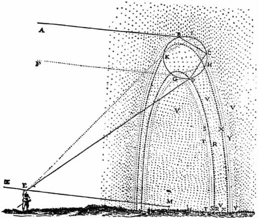

决定不出版他的物理学著作之后，原本作为《世界》续篇的《论人》也必须搁置了。《论人》主要讨论人的本性，或者说在他的物理学著作所描绘的想象世界中生存的“人”的本性。书的结构很简单。笛卡尔计划先“单独描述身体，再单独描述灵魂，最后再描述这两种本质必须以怎样的方式结合才能构成一种与我们相似的人”（11.120）。
“单独描述身体”的章节中有部分内容是以笛卡尔1630年就开始写的一篇光学著作为基础的，现在这篇旧作被重新翻出来，并可能有所扩充。到了1635年它已经具备书的雏形了，名为《屈光学》。另外一篇早在1629年就开始筹划的长文也准备以《气象学》为名发表，文中探讨了包括“风和雷的成因”以及“彩虹的颜色”在内的许多问题（参考1.338及下文）。笛卡尔打算出版这两篇著作，作为展示自己方法的样本。另外一篇独立的著作《方法谈》，也就是前面提到的仿自传作品，将专门介绍这种方法及其在两本书中的应用。《气象学》大概在1636年末交到了印刷商手里，笛卡尔在此之前可能已经完成了方法的第三个样本——《几何学》。他最后才写《方法谈》。这四篇作品整理之后于1637年合并为一本书出版。
《方法谈与论文选》和其他三篇作品的文学外壳解决了此前阻碍笛卡尔出版的许多问题。首先，他不擅长写大部头著作，他所选择的形式让他可能以类似作品集的方式把几本最能代表自己水准的小书展示给世人。其次，他不愿冒险触怒教会，由于采用了这种把反映自己工作成果的样本逐步展示给世人的做法，他可以在宣传新方法的同时无须泄漏那些关于行星运动的有争议的理论。最后，他知道在巴黎的崇拜者期待自己继续推进他们在20年代就已瞥见的工作，这些光学、几何学和气象学的著作不会令他们失望。笛卡尔在巴黎时曾与密多治和梅森合作从事光折射的研究，《屈光学》在此方面取得了丰硕的成就。他在给费里耶的信中描绘过的切割望远镜镜片的机器也在这本书中有了具体的设计。他曾私下向密多治和哈代展示的几何难题解法也在《几何学》中详细地公布出来。《气象学》则公开了笛卡尔在写作《世界》之前（或许是在巴黎的时候）似乎就已经表述过的一些假设。
1637年2月的一封信（1.347）表明，梅森曾催促笛卡尔在出版《方法谈》的时候也一并发表自己的物理学，以免公众无限期地等待他的新作。笛卡尔婉拒了这个建议，他并没有放弃出版物理学著作的希望，但他还在企盼更宽松的文化气候，并认为《方法谈与论文选》有助于创造合适的条件。在私下分发自己的书时，笛卡尔在其中一本前面附上了一封信，声称出版这些作品“完全是为了”替他的物理学扫清道路。
这三篇作品里有些什么？《屈光学》探讨了光、视觉和改善视力的人工方法。之所以叫《屈光学》，是因为它的主题是光的折射，而不是反射。笛卡尔已经在《世界》末尾详细讨论过光的本质，而在《屈光学》中，第一章就是讨论这个问题的。笛卡尔央求读者对这三篇作品发表评论，提出问题和反对意见，或许他希望有人请求他详细阐释《屈光学》里的光理论，这样他就有了透露《世界》部分内容的借口。
《屈光学》第一章在探讨光的本质时似乎欲语还休：“我无须说出它的本质是什么，或许作两三个比较就够了……”（6.83）笛卡尔把光穿越空气等透明物体的作用与物体抵抗盲人手杖的作用相比较，还把光呈现出不同颜色的现象与一只球在不同纹理的表面弹跳相比较。借助这些比较，笛卡尔表明自己接受了将所有感觉表象归因于运动物体之相互接触的解释思路。他的比较有时造成了不幸的后果，例如迫使他错误地声称，光所穿越的介质密度越大，穿越的速度就越快。英国哲学家霍布斯 [38] 、法国数学家费马 [39] 和罗贝瓦尔 [40] 很快就批驳了笛卡尔光学理论的这个隐含结论，他关于光的本质的其他一些说法后来也受到了各种批评。
然而，《屈光学》开篇的这些比较却准确地导向了折射的正弦定律，该定律从总体上确立了光的折射与光所穿越的介质密度之间的关系。（我们尚不清楚，这条定律是笛卡尔本人发现的，还是取自荷兰科学家斯涅尔，学界一般把该定律归到后者名下 [41] 。）《屈光学》的后面各章讨论了眼睛的结构、距离的感知以及望远镜和显微镜镜片的最佳形状和搭配。
《气象学》分成十篇，涉及许多主题：地面物体，蒸汽和升气 [42] ，盐的本质，风、云、彩虹、雪、冰雹、风暴与其他现象。除了彩虹成因的理论外，《气象学》最大的亮点是其简洁而一致的解释方式。在《世界》的第五章，笛卡尔开始描绘他的想象世界，其构成物质只具备运动、大小、形状等属性和各种特定结构（11.26）。在《气象学》中，他决心按同样的原则来解释一些更明确、更具体的现象。采用这种做法的不止他一人，伽利略以及后来的玻意耳 [43] 和牛顿大体上都用的是同一种工具。因此，《气象学》只是展示如何用物质和运动来解释自然现象的多个样例中的一个。但是笛卡尔却更愿意把这种解释方法视为自己的专利。在反驳巴黎法兰西公学院 [44] 教授让-巴蒂斯特·莫兰 [45] 对《气象学》的指责时，他说了下面这番话：
（2.196）
这样，他等于是在声称，自己正以一人之力拆除整个经院物理学的过时架构。
他所鄙夷的那种解释方式总是将各种事物显现出来的属性归于种种本性或形式 [46] ，正是这些本性或形式决定了事物的类别。支撑这种解释方式的理论不假思索地认为，本性天然是有秩序的、稳定的，每种事物由于其本性的决定作用，都表现出与之相应的特定行为和变化方式。按照这样的思路，石头之所以“应当”向宇宙的中心坠落，是因为此乃石头的本性。天体的本性就是有规律地、永恒地运转，橡子的本性就是长成橡树。对于可观察到的物体来说，除了偶然发生的事件，它们的一切行为都可追溯到某种潜藏的、稳定的本性或形式，而每一种人可感知到不同于他物的事物都有不同的本性或形式。如果一种事物的行为无法归因于它的形式，那就必须归因于它的构成材料或者它变成此类事物所应当满足的那种目的 [47] 。若人们发现了某些物质的新属性，他们只能采用一种特殊的解释，把新属性添加到这些物质天然具有的性质或形式当中。莫里哀 [48] 就曾用一位医生的故事来嘲笑这种解释方式，那位医生说，鸦片之所以能帮助人们睡觉，是因为它有催眠的效力。笛卡尔在1642年的一封信中说，虽然自己在《气象学》中并未直接否定或抛弃这些所谓的“效力”或“性质”，但他发现，“自己的解释根本用不着这一套”（7.491）。
他只用了“一个假设”，但《气象学》的成就表明，它比经院物理学关于形式和性质的全部假设还要有力量。在书的开头，笛卡尔仅仅考虑了物质构件的形状和组成，就推导出了固体和液体的形成过程。在解释光的传播时，他设想了一种非常精微、感官无法知觉的物质，它散布于液体和固体的极其细小的“毛孔”中，这种物质产生的热量与太阳光激活它的程度成正比。以这个假设为基础，笛卡尔解释了为什么人觉得白昼比夜晚暖和，为什么越接近赤道也越暖和。他提出的其他一些假设也借助了这种精微的物质。例如，他说该物质在物体毛孔中的运动使得物体的部分与整体相脱离，并上升到空气中，于是形成了蒸汽。盐是由长而硬的微粒组成的，在水中时它们不会蒸发，因为它们太重，不能轻巧地浮在空中。用沙过滤就能提取海水中的盐，是因为沙的微粒只让水的微粒通过，却拦截了长而硬的盐微粒。《气象学》前面的“谈话”部分就是用这种系统的方式来解释各种现象的。
然而，笛卡尔在这一部分的说法并非都是准确的，远远不是。水加热到沸点之后再冷却更易结冰——笛卡尔提到的这个“事实”根本不是事实；他的一些“解释”也很容易被实验驳倒。在彩虹的问题上，他相对比较成功，因为掌握了折射定律的他即使无法说明彩虹颜色的排列顺序，至少也能解释彩虹为什么是弧形。

图4 《气象学》中对彩虹成因的解释
在介绍这三篇著作的目的时（9B.15），笛卡尔称，《屈光学》是为了吸引人们注意他的科学所催生的一门有益的技艺（制造望远镜的技艺）；《气象学》是为了向读者展示，在经院物理学反复讨论的一些领域，使用新假设可以取得远为丰硕的成果；“而在《几何学》里，我的目标是告诉大家，我发现了前人所不知晓的几样东西……”（9B.15）
笛卡尔认为，第三篇著作包含了他最杰出的成就。我们在介绍《法则》时，已经提到他改进了数学的表示法，也改变了关于二次方、三次方以及高次方运算的通行观念。他的另一个创新点是设想了一种绘制曲线的机器。前人的看法是，某些曲线无法用严格的几何方法绘制出来，因此只能称为“机械”图形，而不是“几何”图形。笛卡尔的分析表明，许多所谓的“机械”图形其实都可归为几何图形。他还给出了一套关于等式的完整理论，详细说明了如何用等式来表示线条和图形。他的等式理论与前人相关理论之间的渊源成了他和其他数学家长期论战的一个焦点。
人们普遍认为，笛卡尔故意让《几何学》和其中的方法显得超乎寻常地繁复，其目的是防止他人剽窃自己的技巧。但这一做法也使得只有很少人能理解他的创新。《几何学》的读者无疑会深信，笛卡尔是一位数学天才：他首先破解了古代几何学家帕普斯 [49] 留下的著名难题，这一点就足以证明。但他在《几何学》中提出的基本方法却深锁在迷雾中，即使当时最优秀的数学家也大惑不解，包括最初劝说笛卡尔去攻克帕普斯难题的那位。